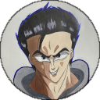
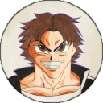
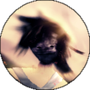
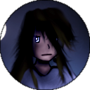

Rikimaru "Riki" was born and raised in the projects of _____. Growing up with a single mother, he took to the streets to help make ends meet. While he does act rather brash, Rikimaru generally means well deep down.
RikimaruClass: VitaBlood Type: O
Jericho was born and raised in a similar project of _____ as Riki. Jericho took to the streets as well, but partook in shadier activities compared to Riki. This leads to a rivalry between the two when Jericho decided to set Riki up with possession of narcotics. Jericho is a force to be reckoned with, due to his ability to imbue himself with Vita, greatly boosting his physicality.
JerichoClass: VitaBlood Type: O
"Monsoon" is a ninja-like bounty hounter who is able to manipulate water using his Wahi. As a defector of the World Government, he hides out from their agents and seeks to eliminate their intel of the "Big Bad" and its influence. Possessing the legendary Feather Whip, he proves as an invaluable partner to Riki in the journey to _____.
MonsoonClass: WahiBlood Type: O
A young masked man that simply goes under the alias "Hilário", he ventures out to search for artifacts, gems, and any clues that help unravel the mysterious influences of the "Big Bad". He unscrupulously uses allies, adversaries, and bystanders alike as pawns to conquer in order to achieve his goals.
HilárioClass: NoneBlood Type: AB
Micca is a young girl living in _____. Witnessing the loss of her family by the hands of a mafia empowered her with the dangerous elements of Zahu. While her newfound abilites avenged the death of her family, she inadvertently killed several innocent people with her Umbral Gaze. She later joins Riki's crew, but the torment of her past scars her into a fear of condemning anyone else to the same fate.
MiccaClass: ZahuBlood Type: A
"Catorce" is a young cowboy from _____. His nickname was given to him by the townsfolk when he killed 14 criminals in a shootout lasting under 2 minutes. A deeply religious man, his Wahi is able to ward off curses and bless the crew with good fortune. His eye amplifies his marksmanship and apprises him of any evils lurking nearby, no matter how insidious.
CatorceClass: WahiBlood Type: O